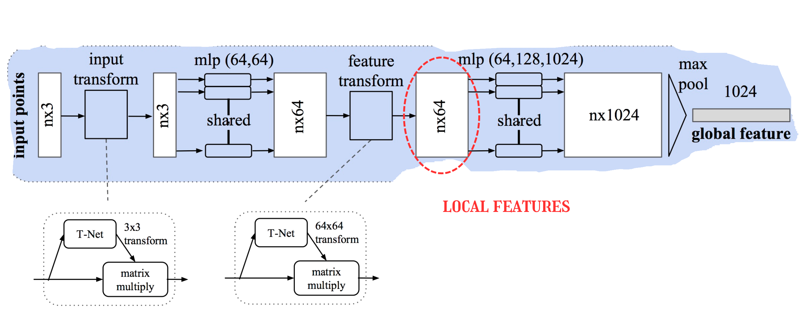

I embarked on an ambitious project to leverage deep learning for point cloud processing. Utilizing the PointNet architecture, I developed a model capable of handling complex spatial data. This project was not only a technical challenge but also a venture into optimizing computational resources for real-time processing. The outcome was a robust model that significantly enhanced the accuracy and efficiency of our point cloud analysis, paving the way for more advanced applications in surgical navigation.


And this is how it is coded in Python
class PointNet_features(torch.nn.Module):
"""
PointNet_features is a PyTorch module for extracting features from point cloud data.
It can optionally include T-Net modules for spatial transformer networks.
"""
def __init__(self, ...):
"""
Initialize the PointNet_features module.
"""
super().__init__()
self.h1 = MLPNet(3, mlp_h1, b_shared=True).layers
self.h2 = MLPNet(mlp_h1[-1], mlp_h2, b_shared=True).layers
self.tnet1 = TNet(3) if use_tnet else None
self.tnet2 = TNet(mlp_h1[-1]) if use_tnet else None
def forward(self, points):
"""
Operations galore.
"""
...
# Return the global feature vector which can be used for further processing or as input to a classifier.
return x